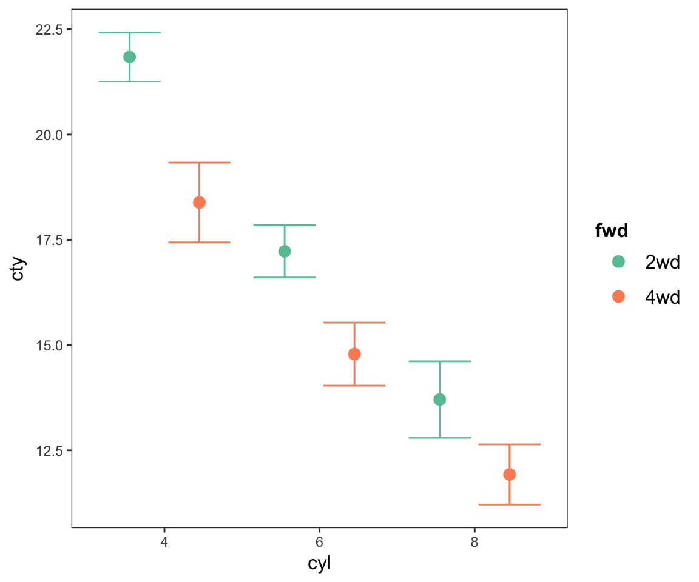
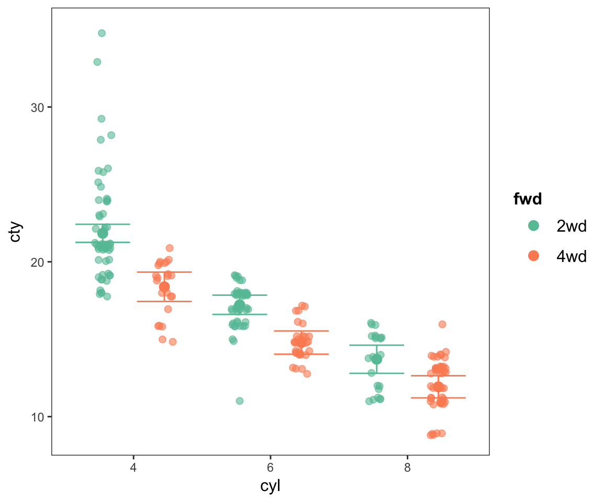
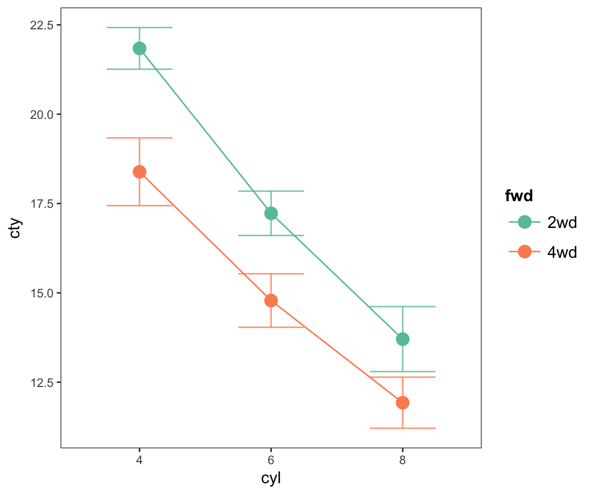
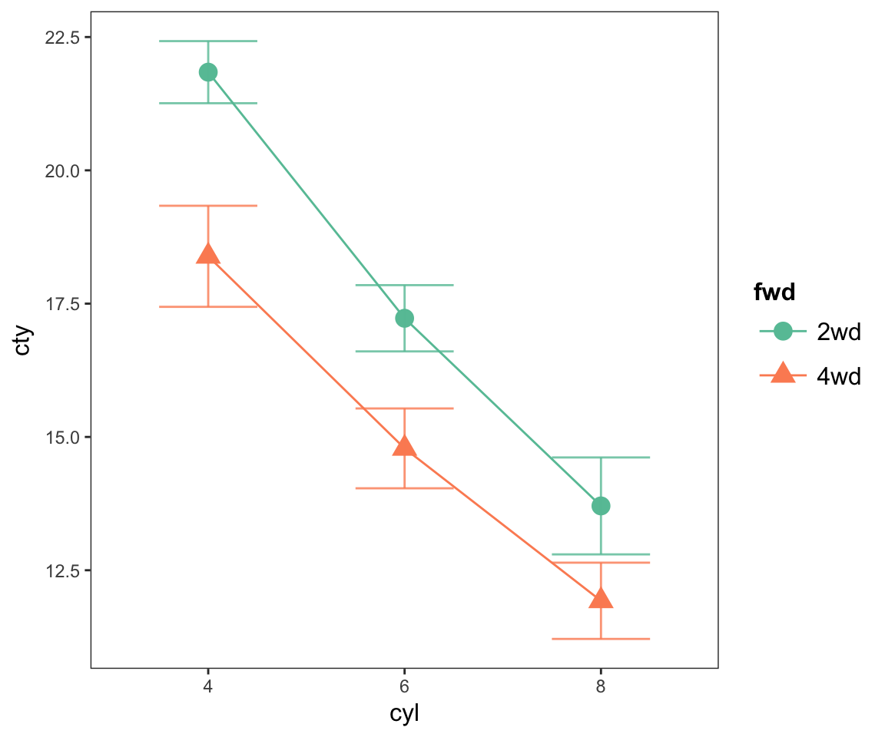
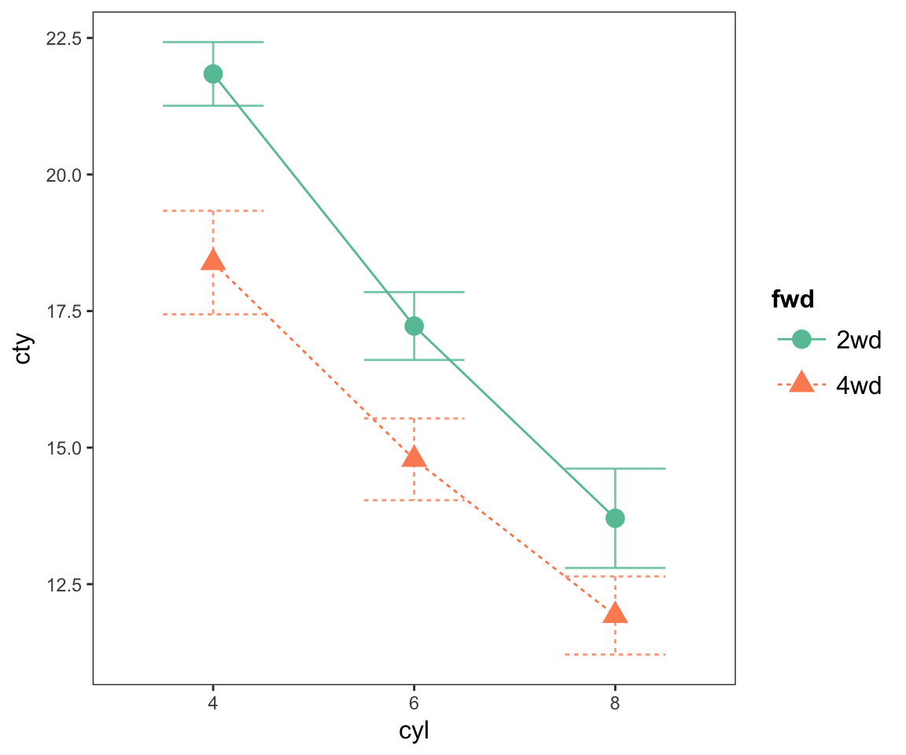
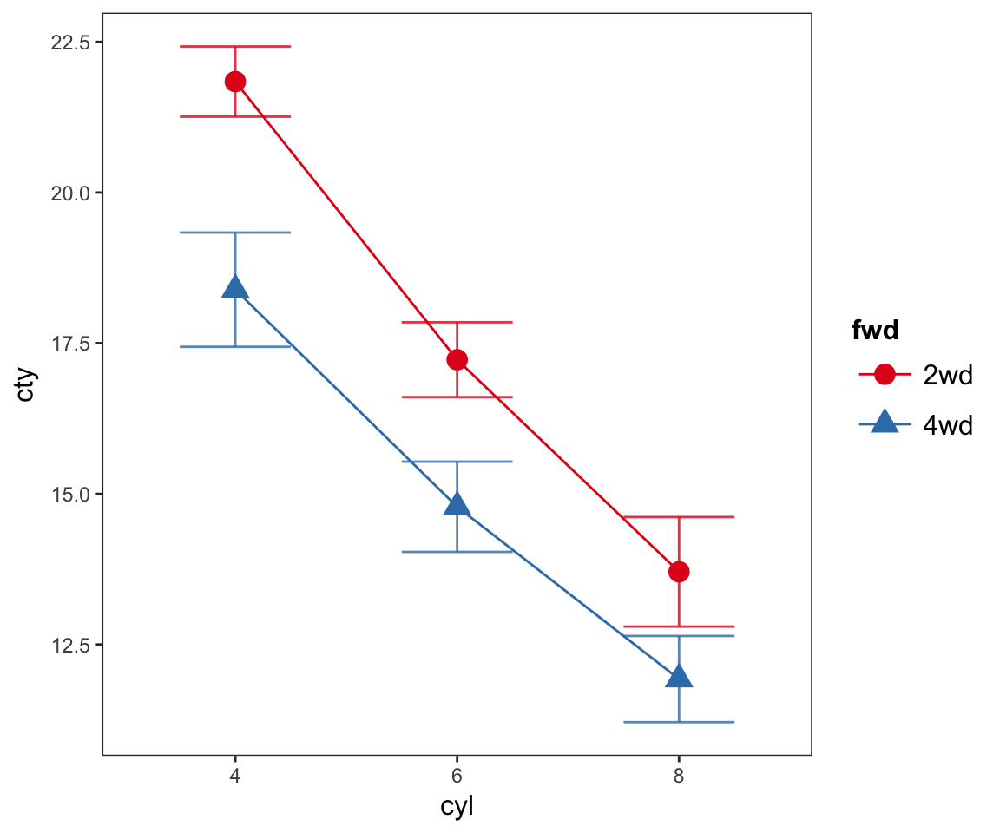
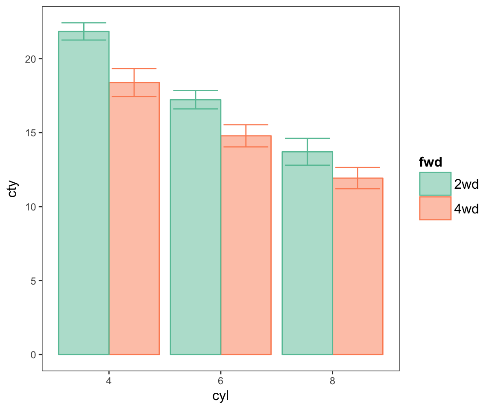
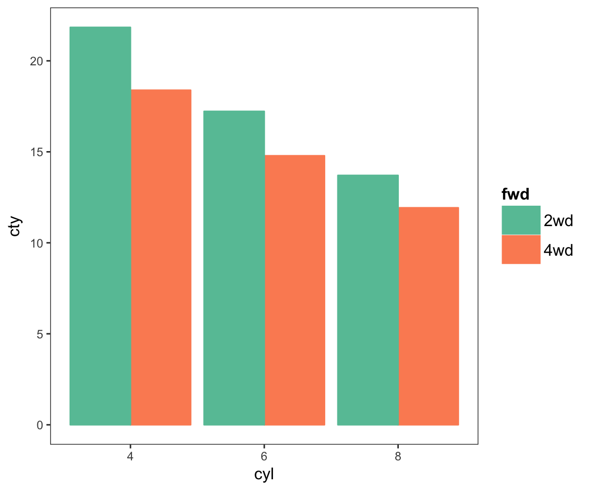
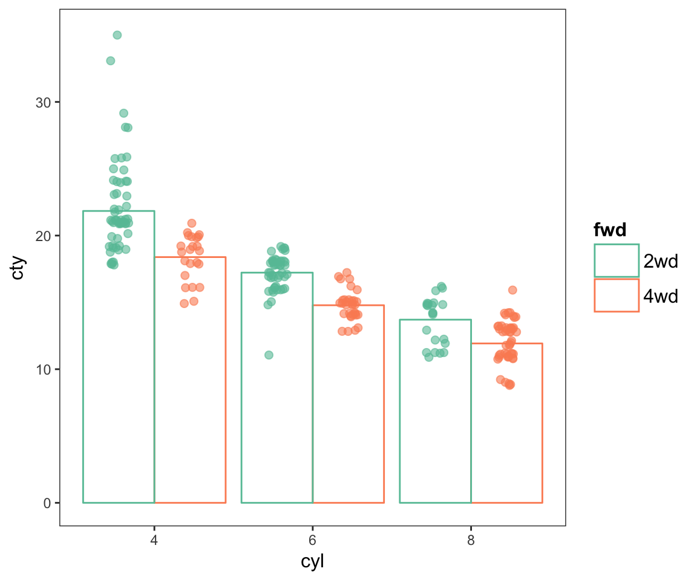

When trying to understand interactions between categorical predictors, the types of visualizations called for tend to differ from those for continuous predictors. For that (and some other) reasons, jtools offers support for these in cat_plot while continuous predictors (perhaps in interactions with categorical predictors) are dealt with in interact_plot, which has a separate vignette.
To be clear…
If all the predictors involved in the interaction are categorical, use cat_plot. You can also use cat_plot to explore the effect of a single categorical predictor.
If one or more are continuous, use interact_plot.
First, let’s prep some data. I’m going to make some slight changes to the mpg dataset from ggplot2 for didactic purposes.
library(ggplot2)
mpg2 <- mpg
mpg2$cyl <- factor(mpg2$cyl)
mpg2$auto <- "auto"
mpg2$auto[mpg2$trans %in% c("manual(m5)", "manual(m6)")] <- "manual"
mpg2$auto <- factor(mpg2$auto)
mpg2$fwd <- "2wd"
mpg2$fwd[mpg2$drv == "4"] <- "4wd"
mpg2$fwd <- factor(mpg2$fwd)
## Drop the two cars with 5 cylinders (rest are 4, 6, or 8)
mpg2 <- mpg2[mpg2$cyl != "5",]
## Fit the model
fit3 <- lm(cty ~ cyl * fwd * auto, data = mpg2)So basically what we’re looking at here is an interaction between number of cylinders in the engine of some cars and whether the car has all-wheel drive or two-wheel drive. The DV is fuel mileage in the city.
Let’s see what happens using all the default arguments:
cat_plot(fit3, pred = cyl, modx = fwd)
This is with geom = "dot". We can see a main effect of cyl and maybe something is going on with the interaction as well, since the different between 2wd and 4wd seems to decrease as cyl gets higher.
You can also plot the observed data on the plot:
cat_plot(fit3, pred = cyl, modx = fwd, plot.points = TRUE)
And since cyl does have a clear order, it might make more sense to connect those dots. Let’s try geom = "line":
cat_plot(fit3, pred = cyl, modx = fwd, geom = "line")
Okay, that makes the trend quite a bit clearer.
You have some other options, too. Suppose you will need this plot to look good in black and white. Let’s change the shape of those points for different values of the moderator.
cat_plot(fit3, pred = cyl, modx = fwd, geom = "line", point.shape = TRUE)
You can change the line patterns as well for more clarity.
cat_plot(fit3, pred = cyl, modx = fwd, geom = "line", point.shape = TRUE,
vary.lty = TRUE)
You may also choose any color palette from RColorBrewer:
cat_plot(fit3, pred = cyl, modx = fwd, geom = "line", point.shape = TRUE,
color.class = "Set1")
Last but not least, you can also make bar charts, AKA dynamite plots. For many situations, these are not the best way to show your data, but I know it’s what a lot of people are looking for.
cat_plot(fit3, pred = cyl, modx = fwd, geom = "bar")
The transparency of the fill color depends on the presence of the error bars and observed data points.
cat_plot(fit3, pred = cyl, modx = fwd, geom = "bar", interval = FALSE)
Now let’s look with observed data:
cat_plot(fit3, pred = cyl, modx = fwd, geom = "bar", interval = FALSE,
plot.points = TRUE)